A black kitchen sounds like a bold swing before you've actually seen one in person.
In practice, it tends to feel a lot less like a risk and a lot more like the kitchen finally looks finished.
These ideas cover exactly where black actually earns its place in a kitchen, and the supporting choices that keep the whole look from feeling heavy.

1. Start Small With Accessories
A few black accessories, cookware on display, a vase, small appliances, reinforce the palette without requiring any structural changes.
This is one of the easiest, lowest-cost ways to test the look before committing to cabinets or countertops.
Fewer, more deliberate pieces read better here than a cluttered counter full of them.
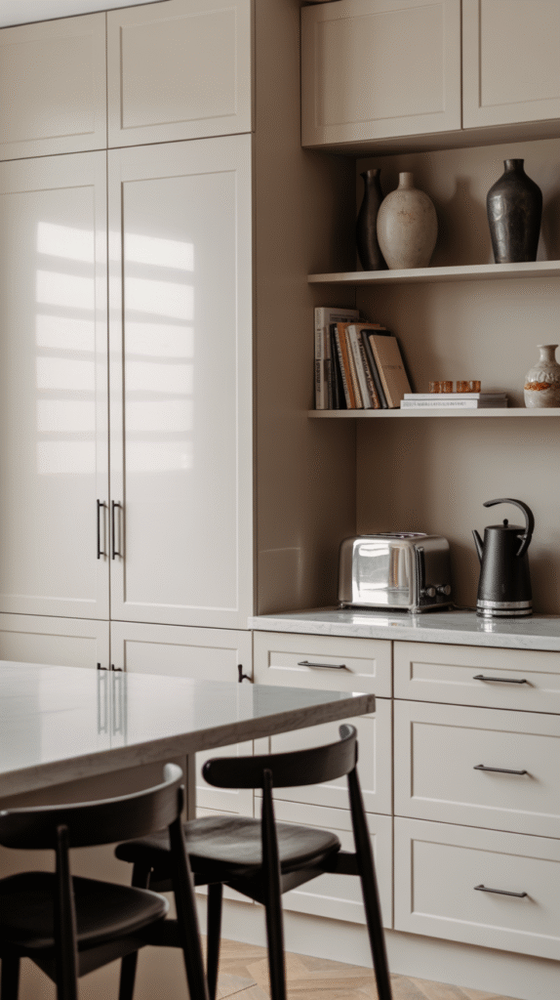
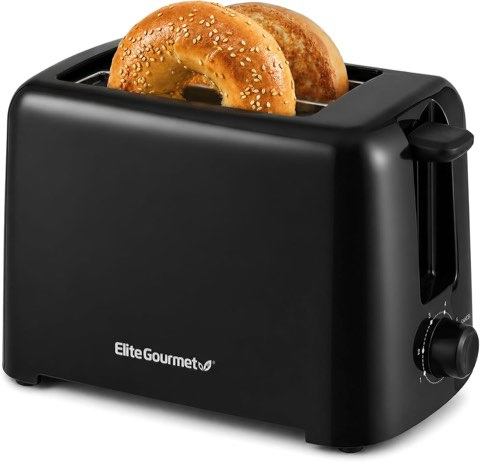
Elite Gourmet 2-Slice Cool-Touch Toaster, 1.25" Extra-Wide Slots, 6 Shades
Shop on Amazon2. Treat Lighting as Essential, Not Optional
Black absorbs light rather than reflecting it, which means a black kitchen needs more deliberate lighting than a lighter one does.
Layered lighting, under-cabinet task lighting, overhead fixtures, and a statement pendant over the island, keeps the room from reading as dim or cave-like.
This matters more here than in almost any other kitchen color choice, and it's the detail most likely to get skipped.
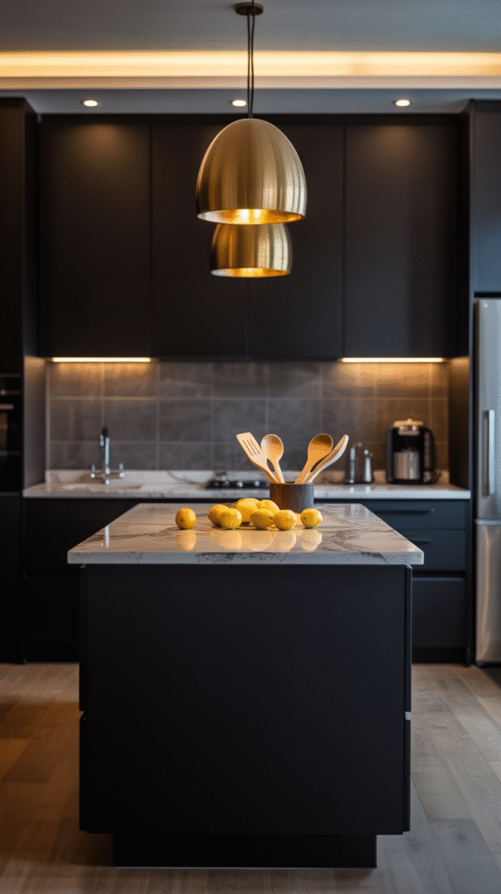
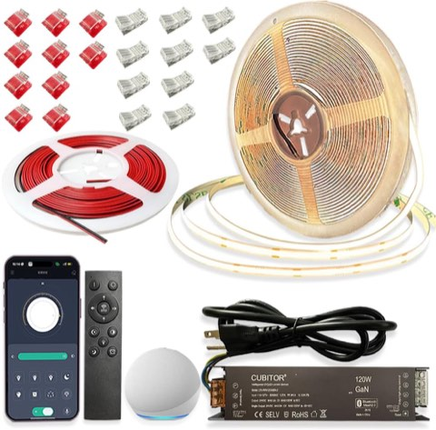
CCT COB LED Strip Light Kit, 32.8 ft, Dimmable, Smart App/Remote Control
Shop on Amazon3. Use Open Shelving to Lighten the Mood
Open shelving breaks up a wall of solid black cabinetry and gives the room somewhere lighter to breathe visually.
Displaying lighter-colored dishware or glassware on the shelves adds another layer of contrast without any extra renovation.
This works especially well in a smaller black kitchen, where full upper cabinets can feel heavier than the room can handle.
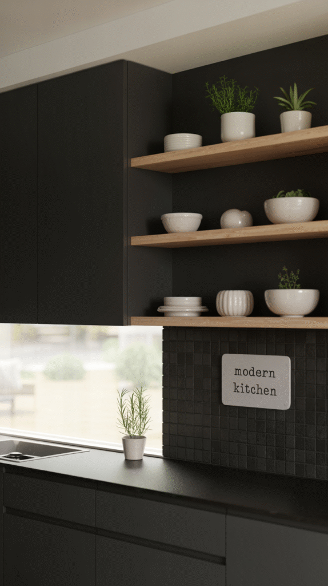

4. Make the Island the Focal Point
A black island, even in an otherwise lighter kitchen, becomes an instant anchor for the whole room.
This is a lower-commitment way to try the look. One piece of furniture instead of every cabinet in the kitchen.
Pairing it with lighter surrounding cabinetry keeps the contrast working in the island's favor.
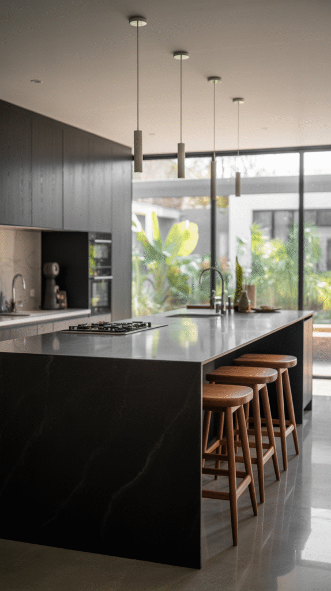
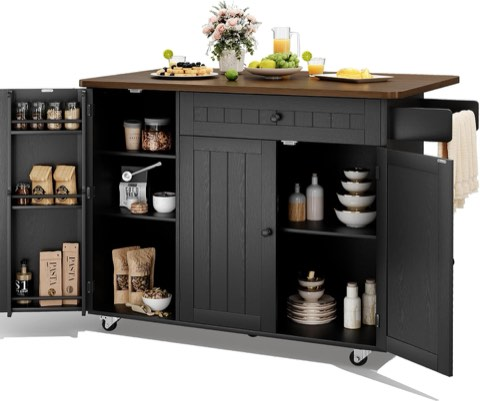
GRUSIGN 41.7" Rolling Kitchen Island Cart with Drop Leaf Storage, Black
Shop on Amazon5. Pair Black With Real Wood
Warm wood tones, open shelving, a butcher block island top, wood flooring, soften black cabinetry more effectively than almost any other material pairing.
This combination tends to read as the most universally approachable version of the black-kitchen look.
Either light or dark wood works, as long as it's warm-toned rather than cool-toned.
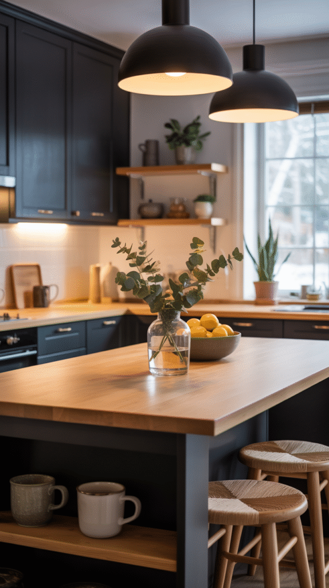
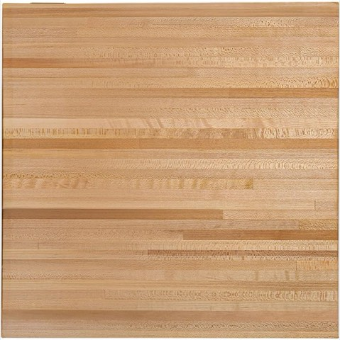
CONSDAN Butcher Block Countertop, 36 x 36 Inches, USA Grown Solid Hard Maple Hardwood
Shop on Amazon6. Bring In Metallics for Shine
Brass, gold, or warm brushed-metal hardware and fixtures catch the light in a way flat black surfaces can't on their own.
A few well-placed metallic accents, cabinet pulls, a faucet, pendant lights, keep an all-black kitchen from feeling matte and lifeless.
Cooler chrome or stainless tends to feel more clinical here than a warmer metal tone does.
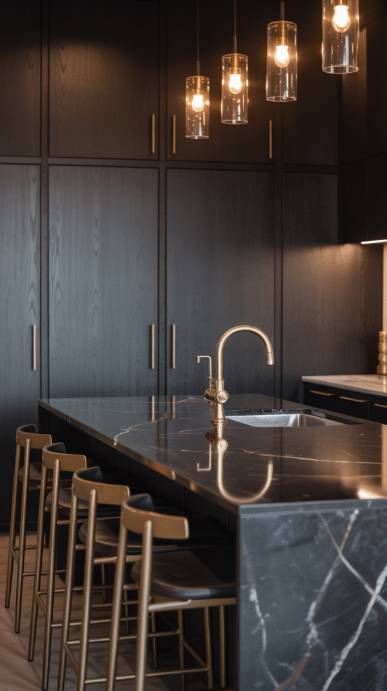
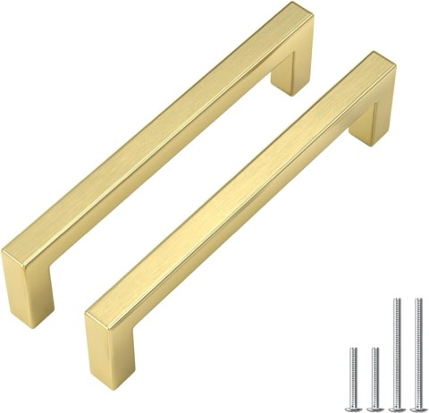
Goldenwarm 20 Pack 5" CC Brushed Gold Cabinet Pulls Gold Cabinet Handles
Shop on Amazon7. Build In Real Contrast
An all-black kitchen with zero contrast risks feeling like one flat dark block rather than a considered design choice.
White countertops, a light wood floor, or pale walls all give the eye somewhere to land and keep the room from feeling closed in.
This single decision does more to determine whether the kitchen feels dramatic or oppressive than almost anything else on this list.
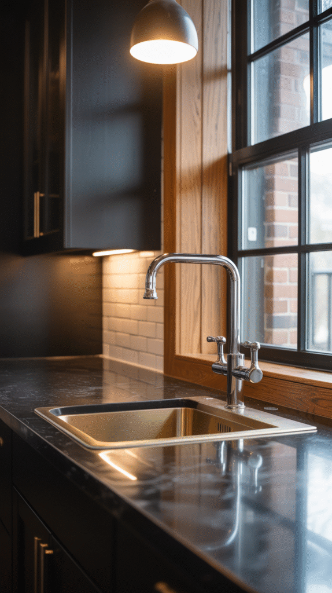
8. Let a Backsplash Carry Some of the Drama
A black tile, a slab backsplash, or even a bold patterned tile in black and white all work well against black cabinetry.
This is one of the lower-commitment ways to bring black into the kitchen without painting every cabinet.
A textured or patterned option here also adds visual interest that flat black cabinets alone don't provide.
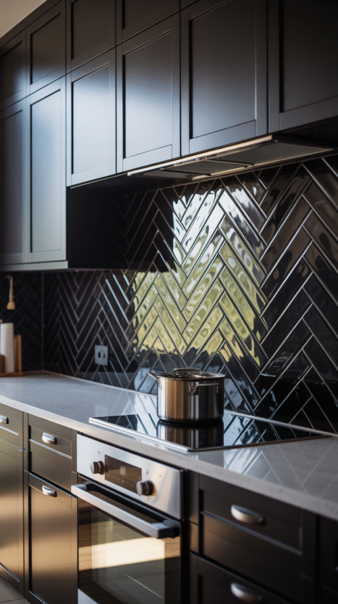
9. Add Appliances That Disappear Into the Palette
Black or matte-black appliances blend into the cabinetry instead of standing out as a separate, competing finish.
This creates a cleaner, more unified wall of cabinetry and appliances than stainless steel would against black cabinets.
Worth checking fingerprint-resistant coatings specifically, since matte black can show smudges more visibly than other finishes.
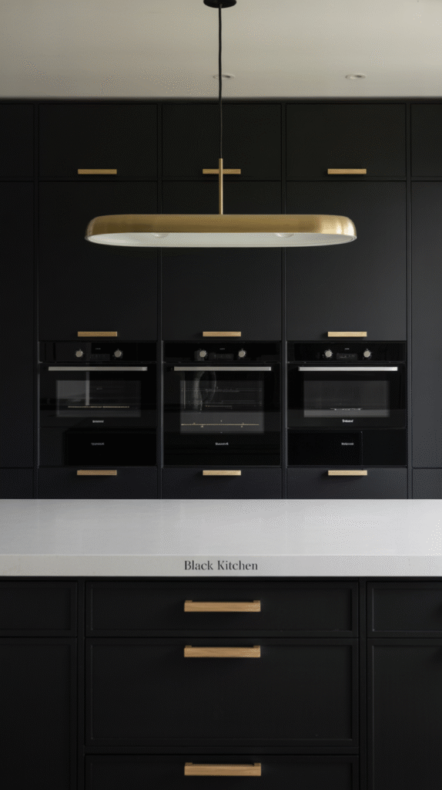
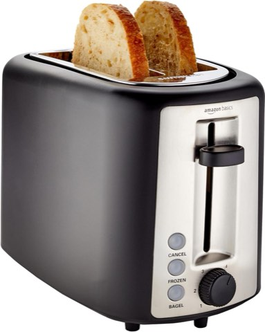
Amazon Basics 2 Slice Toaster, Extra Wide Slots for Bagels, 6 Browning Settings
Shop on Amazon10. Weigh Black Countertops Carefully
A black countertop, honed granite, soapstone, or a black quartz, pairs naturally with black cabinetry for a more monochrome, cohesive look.
Matte and honed finishes hide water spots and fingerprints noticeably better than a polished black surface does.
This works well paired with black cabinets, but isn't required for the look to succeed overall.
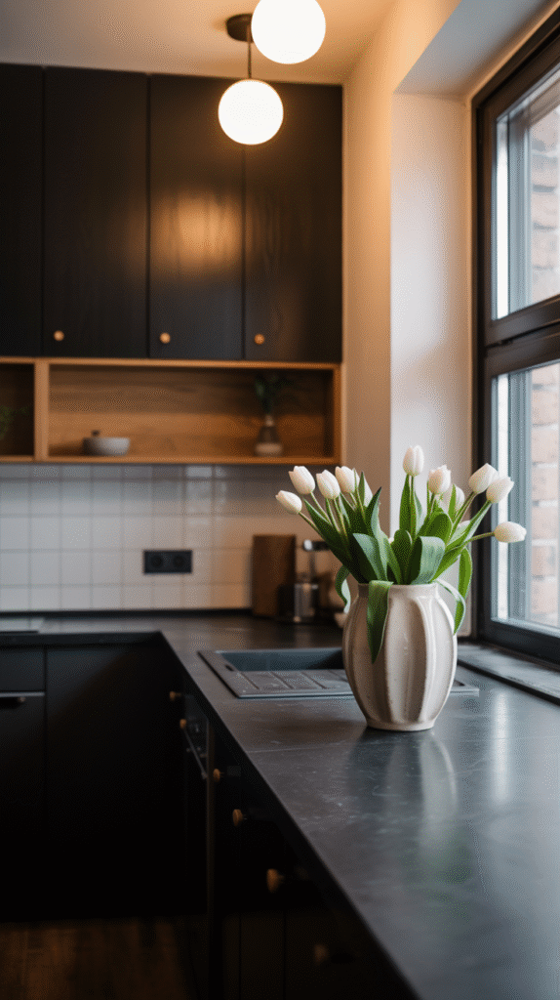
11. Start With the Cabinets
Cabinetry is the single biggest surface in most kitchens, which makes it the highest-impact place to commit to black.
A matte or satin finish tends to feel more sophisticated here than a high-gloss one, which can read as severe under bright kitchen lighting.
This is usually the first decision to make, since most of what follows gets chosen in response to it.
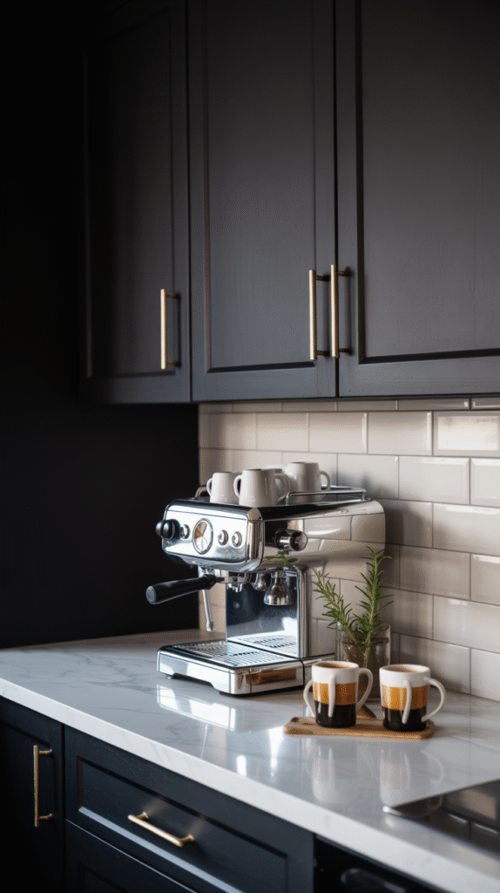


Why the Look Keeps Resurfacing
Black in a kitchen reads as deliberate rather than trendy once it's done well, which is part of why it hasn't faded the way louder trends usually do.
It also photographs and lives differently than almost any other kitchen color, moodier in the best sense, not darker in a bad one.
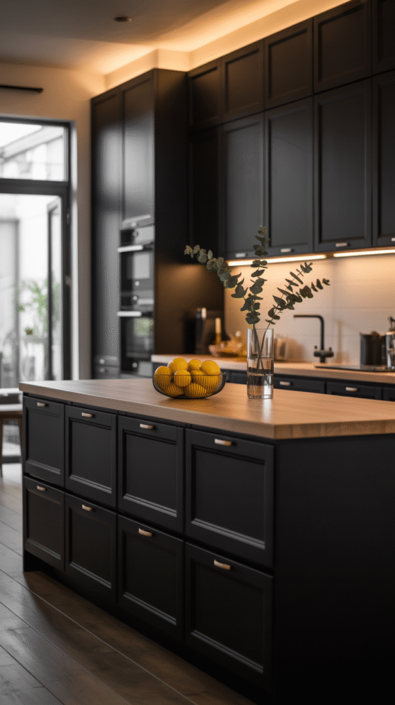
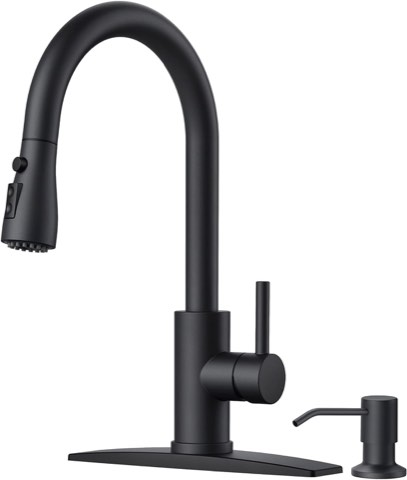
FORIOUS Black Kitchen Faucet, with Soap Dispenser and Pull Down Sprayer
Shop on AmazonContrast and Lighting Matter Most
A black kitchen doesn't require every surface to go dark at once.
Cabinets, an island, or even just the hardware and lighting can introduce the look at whatever scale actually fits your space and budget.
Contrast and lighting are genuinely the two decisions that matter most here. Get those right, and the rest of the palette falls into place on its own.